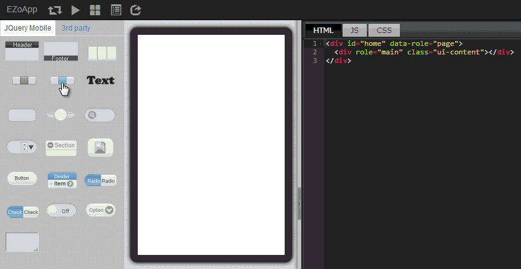
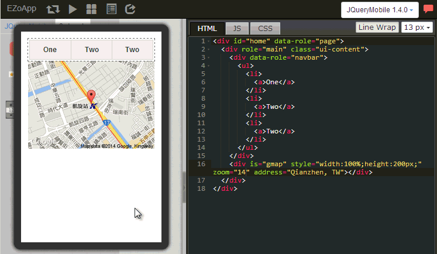
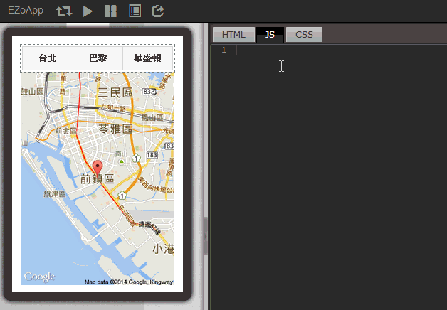

google 地圖是目前世界上最好用的開放地圖資訊平台，也是目前最多人使用的地圖，舉凡網頁、導航、Android、iOS...等各式各樣的 Device 都會見到 goolge 地圖的身影。
但很可惜的，對於不會撰寫程式的人而言，要在自己的網頁內加上一個地圖，簡直會要了他的命，不過如果這時候他用了 EZoApp，他的這條命就整個保住了！( 好冷 XD ) EZoApp 的 3rd Party 元件，當中就有一個名為 gmap 的元件供大家使用，搭配 EZo 研發團隊的語法，使用者只需要寫三行，共不到一百個字母的程式碼，就可以翹著二郎腿捻著鬍鬚觀賞自己做出來的地圖，這種心情真是無法想像的愉悅呀！ 雖然 EZoApp 已經是非常的方便使用，在製作之前，仍然必須要求大家要有一點點的 HTML 和 CSS 基礎，畢竟在一些排版上，還是需要用到相關的基礎知識喔！
接下來就讓我來用最快的速度來介紹這個最快可以寫好的地圖程式吧！打開 EZoApp！Let’s Go！
範例連結：
結合 JavaScript 應用 - Google 地圖應用
navber 元件是常用的元件之一，顧名思義就是一個導覽頁籤的元件，這個元件的程式碼也很簡單，有幾個按鈕就有幾個 <li><a></a></li>，如果有多個按鈕需求的使用者，就自行添加就會自動長出按鈕。
gmap 元件是 EZo 研發團隊 所開發的元件，讓使用者可以簡單迅速的創造地圖，使用的方式也相當簡單，在元件的面版中，選擇 3rd Party 的元件，接著選擇 gmap 元件，拖曳進入畫面後，進行長寬尺寸的編輯，不過 gmap 元件不只有長寬尺寸的功能，你還可以改變 zoom 的數值控制地圖縮放的大小數字越大地圖放的越大，也可以由 address 來指定地圖置中的地點，是不是相當的方便呢！
<div is="gmap" style="width:100%;height:200px;" zoom="12" address="Qianzhen, TW"></div>
光是放上元件就想要讓按鈕和地圖連動？說真的這實在有點難度，不過 EZoApp 已經幫我們把門檻大大的降低，只要把 navbar 的頁籤改成都市的名稱，然後在 JS 的頁籤貼上下列這串程式碼，地圖就會按照我們點選的都市，跳轉到以該都市為中心的地點囉！
$(document).on('pageinit', function () { // 頁面開始時要執行的程式
$('#map_btn').on('click', function (e) { // 點下 navbar 按鈕時要執行的程式
var addr = $(e.target).text(); // 讀取現在按下按鈕的都市名稱
$('#map').gk('address', addr); // 以該都市為中心點顯示在地圖上
});
});
但是不要忘記，在 navbar 要加上 id="map_btn"，在地圖要加上 id="map"。
<div data-role="navbar" id="map_btn">
<div is="gmap" id="map" style="width:100%;height:450px;" zoom="15" address="Qianzhen, TW"></div>
全部程式碼就只有這樣，是不是很簡單！編寫完成後，按下最上方 preview 的按鈕，就可以來測試效果如何囉！

範例連結：
結合 JavaScript 應用 - Google 地圖應用